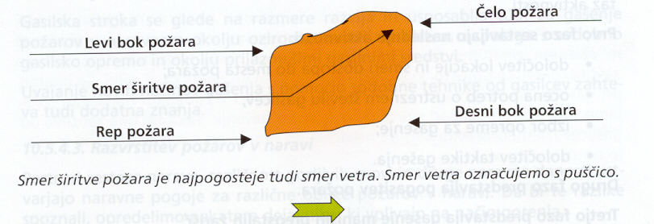
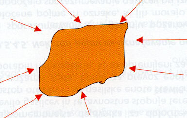
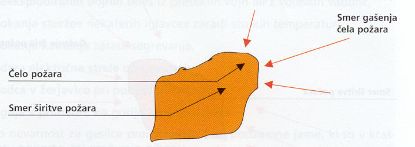
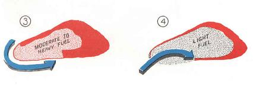
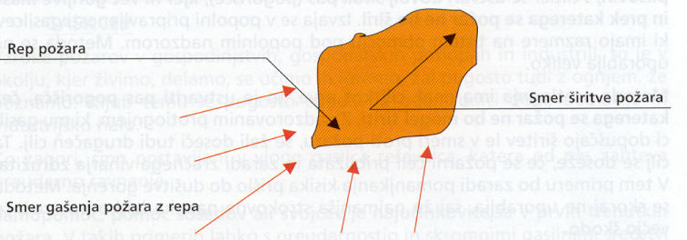
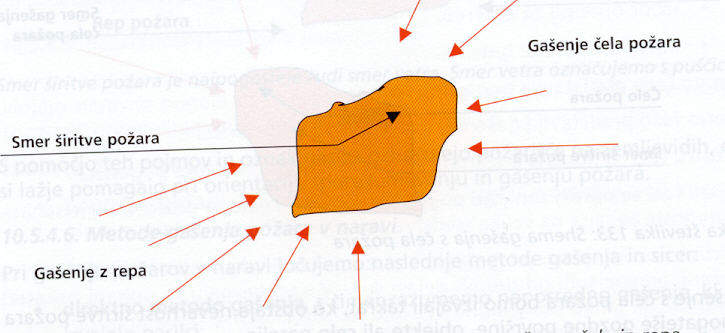

TAKTIKA GAŠENJA POŽAROV
Taktika gašenja požarov v naravi ima svoja pravila, ki jih moramo pri gašenju upoštevati. Vsi si prizadevamo, da čim prej LOKALIZIRAMO POŽAR. Lokalizacije sestavljajo določene aktivnosti, ki jih razvrstimo po naslednjih fazah:
1. FAZA – določitev lokacije in smeri dostopa do mesta požara, ocena potreb o ustreznem številu gasilcev, izbor opreme za gašenje, določitev taktike gašenja.
2. FAZA – predstavlja pogasitev požara in je največkrat najbolj intenzivna.
3. FAZA – predstavlja gašenje manjših preostalih žarišč, s čimer preprečimo ponovni vžig na liniji požara.
4. FAZA – postavi se požarno stražo.
Pri izbiri taktike moramo upoštevati: vrsto požarov, lego, sestavo in razgibanost tal, količino gorljive snovi, prometne poti in zahtevnost dostopa, možnost oskrbe z vodo, stanje oskrbe gasilcev, razpoložljivost moštva, vremenske razmere, druge negativne dejavnike... Ob večjih požarih zaradi preglednejšega in učinkovitejšega vodenja požar razdelimo na sektorje. Vsak sektor ima svojega vodjo, ki ga določi vodja intervencije (VI). VI razporedi enote po sektorjih glede na potrebe in stanje požara. Vodje sektorjev morajo komunicirati tako s VI kot tudi z vodji enot, skupin...
Za sporazumevanje pri požaru uporabljamo določeno terminologijo:

Za gašenje požara v naravi ločujemo naslednje METODE: direktno, indirektno, paralelno in z uporabo naravnih ali umetnih ovir.
DIREKTNE METODE so:
- metoda obkrožitve

- metoda gašenja čela (zunaj in znotraj)

- metoda gašenja z bokov (zunaj in znotraj)

- metoda gašenja z repa (zunaj in znotraj)

- kombinirana metoda

V določenih primerih se izvaja prioritetno gašenje posameznih preskokov zaradi zaustavitve napredovanja požara, posebno ko se požar širi k naseljem. Gašenje žarišč in čiščenje se opravljata po lokalizaciji požara. V notranjosti lahko pustimo posamezne goreče materiale, seveda pa moramo poskrbeti, da bo linija okrog požara temeljito pogašena. Širina očiščene linije okrog požara je odvisna od vetra, razgibanosti terena, vegetacije...
INDIREKTNE METODE gašenja so požig, močenje, tretiranje z retardanti, preseke, poseke, ovire … Določene se lahko izvajajo tudi iz zraka. Možna je hkratna uporaba več metod.